DT2119 - Speech and speaker recognition - Lab 1 - Feature extraction
Contents
Mel Frequency Cepstral Coefficients (MFCCs) are coefficients used in Speech recognition based on human auditive perception. These coefficients come from the need, in the field of autonomous audio recognition, to extract the main features of an audio signal while discarding all the irrelevant features that will make the recognition harder to achieve (background noise, emotion ...)
The sounds generated by a human depend on the shape of the vocal tract, position of the tongue, teeth, lips etc. Then, if we can determine this shape accurately, the phoneme that was produced will be easy to identify. The main objetive of the MFCC it to accurately represent the envelope of the short time power spectrum in order to stablish the shape of the vocal tract. Consisting then of one of the most important features in Speech recognition
First we need to prepare the workspace and load the data set
clear all; close all; load('tidigits.mat') load('example.mat')
1.1 Enframe the audio signal
The purpose of this first step is to cut the original sample in many smaller ones. In this case, we want windowframes of 20 ms with a shift between windows of 10 ms. As the shift is smaller than the window, the computed frames will have shared parts between each other
Compute the number of samples per frame and shift
As out signal has been sampled, we dont have a continuos signal but a discrete one. This is why we are interested of knowing the number of samples per window rather than the time.
The sampling rate is S = 20 kHz. Then the period is 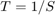. We have that:
Length of the window: 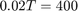 samples Length of the shift: 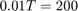 samples
winlen = 400; winshift = 200;
Now is time to check the performance of the written function. To do so, the function is evaluated with the example's structure data set, and compared to the frames given in the example's structure frames. The output generated must be identical to the frames stored in the data structure in example.
samples = example{1,1}.samples;
test = example{1,1}.frames';
frames = enframe(samples,winlen,winshift);
% As the image have to be plotted in with the same orientation as in the
% test data then
frames = frames(:,1:400)';
The comparison is shown in the folowwing figure.
subplot(2,1,1) imagesc(frames) colormap jet title(' Enframe function output') subplot(2,1,2) imagesc(test) colormap jet title(' Test frames set')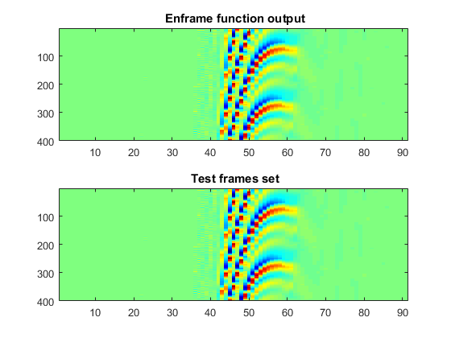
To check the performance numerically, we will substract the test data from the output and get the total differences between both of them
subs = test - frames; Enframe_error = sum(sum(subs))
Enframe_error =
0
1.2 Pre-emphasys
The main objetive of this function is to compesate the 6dB/octave that are dropped due to the radiation at the lips. This funcion is:
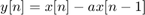
Being the coefficientes 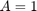 and 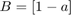.
The purpose of this filter is to filter the lower frequencies, letting pass the higher ones. This is because the important features are in the higher frequencies, remaining the lower frequencies almost unchanged. Therefore, by doing the filtering we discard the similar parts of the signal analyzing only the higher frequencies, where the important features are.
We have now to check the performance of the written function. To do so, we have to compare the output of this function with the test data.
a = 0.97;
preemph = preemp(frames,a);
test_preem = example{1,1}.preemph';
The comparison is shown in the following figure.
figure; subplot(2,1,1) imagesc(preemph) colormap jet title(' Preemp function output') subplot(2,1,2) imagesc(test_preem) colormap jet title(' Test preemphashis set')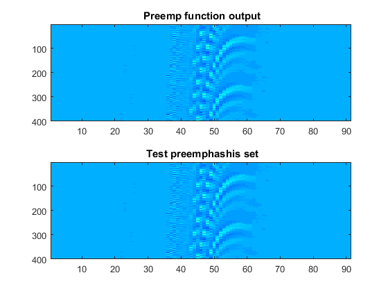
To check the performance numerically, we will substract the test data from the output and get the total differences between both of them
subs = test_preem - preemph; Preemphasis_error = sum(sum(subs))
Preemphasis_error =
0
1.3 Hamming window
The use of the Hamming window is justified as it emphasizes the center of the window, improving this way the values of the Fourier Transfer Function. The sidelobes are reduced, being the center lobe much more important than these side lobes.
The Hamming window is used in order to reduce the discontinuities in the edges of the frames, focusing in the main(centered) frequencies.
The function windowing that applies the hamming window is implemented and used on the pre emphasized frames.
[windowed_frames, window] = windowing(preemph);
test_windowed = example{1,1}.windowed';
The shape of the Hamming window used is figure;
wvtool(window)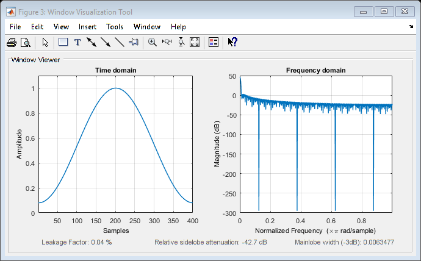
We now have to check the performance of the written function. To do so, we have to compare the output of this function with the test data.
figure; subplot(2,1,1) imagesc(windowed_frames) colormap jet title(' Windowing function output') subplot(2,1,2) imagesc(test_windowed) colormap jet title(' Test windowing set')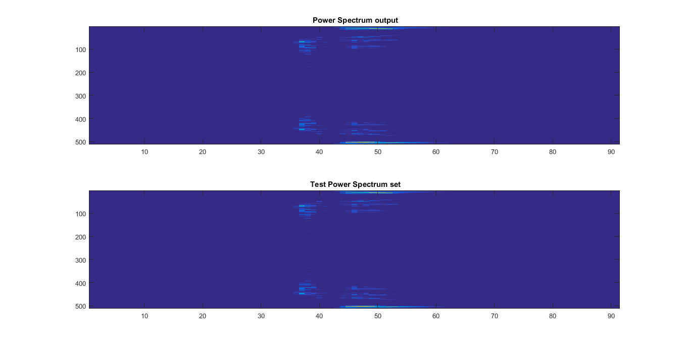
To check the performance numerically, we will substract the test data from the output and get the total differences between both of them
subs = test_windowed - windowed_frames; window_error = sum(sum(subs))
window_error =
-7.791701311932187e-13
We can observe that the error is not exactly cero but is sufficiently small enough. The insignificant difference is probably due to the use of Matlab instead of Python.
1.4 Fast Fourier Transform
The powerSpectrum function is developed in this section. This function performs the Fast fourier Transform to the windowed frames and a then applies a squared power to the modulus. The FFT samples length is 512.
As now er are in the frequency domain, it is interesting what the max frequency will be:
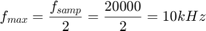
nfft = 512;
FFT_frame = powerSpectrum(windowed_frames,nfft);
test_FFT = example{1,1}.spec';
We have now to check the performance of the written function. To do so, we have to compare the output of this function with the test data.
figure; subplot(2,1,1) imagesc(FFT_frame) title(' Power Spectrum output') subplot(2,1,2) imagesc(test_FFT) title(' Test Power Spectrum set')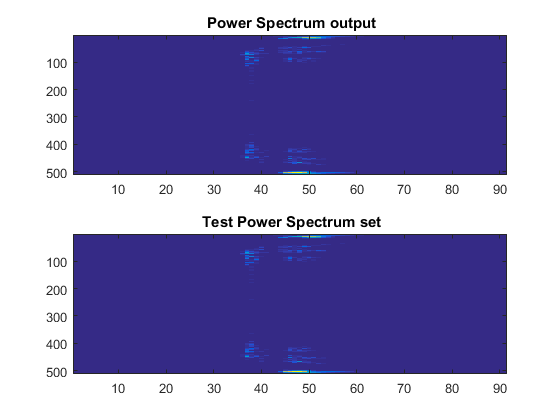
To check the performance numerically, we will substract the test data from the output and get the total differences between both of them
subs = test_FFT - FFT_frame; FFT_error = sum(sum(subs))
FFT_error =
-2.497053070175601e-07
As expected, the error is not 0 as we get the errors from the previous step, but squared. Still the error is too small to be considered.
1.5 Mel filterbank log spectrum
A filter bank is a set a filters. In the case of the Mel fiterbank, these filters are triangles, in which the first filter only keeps low frequencies while the next filters slowly shift to higher frequencies and the amplitude of the triangles decrease, and they get wider.
This decreased amplitude try to represent the human ear system, as the higher the frequencies, the more difficult discern differences. This is why the triangles get wider: we need a bigger filter as the resolution is less precise.
The sum of the energy in every filter is computed. We need to take the log of this energy due to the log property of sound: to double the sound we need 8 times more energy.
In this case the number of filters in the bank is 40: 13 linear filters and 27 logaritmic.
sampling_freq = 20000;
[melSpec_frames, filterBank] = logMelSpectrum(FFT_frame,sampling_freq);
test_melSpec = example{1,1}.mspec';
The Mel filter bank computed is the one that follows
figure('Name','Mel Frequency Filter Bank') plot(filterBank') axis([0, 178, 0, max(max(filterBank))]) title('Mel-filterbank')
We have now to check the performance of the written function. To do so, we have to compare the output of this function with the test data.
figure; subplot(2,1,1) imagesc(melSpec_frames) title(' Power Spectrum output') colormap jet subplot(2,1,2) imagesc(test_melSpec) title(' Test Power Spectrum set') colormap jet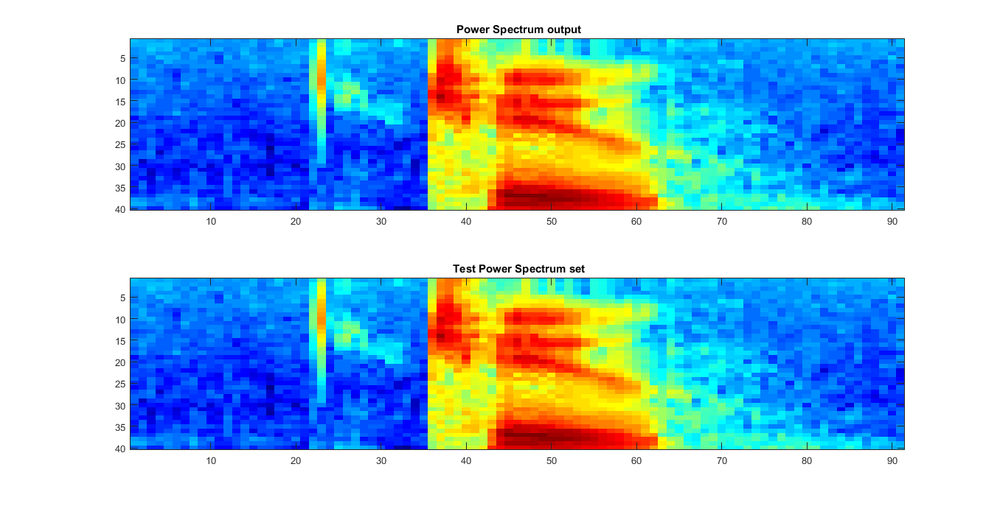
To check the performance numerically, we will substract the test data from the output and get the total differences between both of them
subs = test_melSpec - melSpec_frames; melSpec_error = sum(sum(subs))
melSpec_error =
3.582160609805207e-14
1.6 Cosine Transform
The Discrete Cosine Transform perform a similar operation than the Fourier transform: they both descompose a discrete-time vector in a sum of scaled-and-shifted basis functions. The main difference is that the DCT uses only cosines as the Basis function. We get then, for each window, 13 coefficients or cepstrums.
number_of_coefficients = 13;
[CT_frames] = cepstrum(melSpec_frames, number_of_coefficients);
test_CT = example{1,1}.mfcc';
We have now to check the performance of the written function. To do so, we have to compare the output of this function with the test data.
figure; subplot(2,1,1) imagesc(CT_frames) title(' Cosine transformation output') colormap jet subplot(2,1,2) imagesc(test_CT) title(' Test Cosine transformation set') colormap jet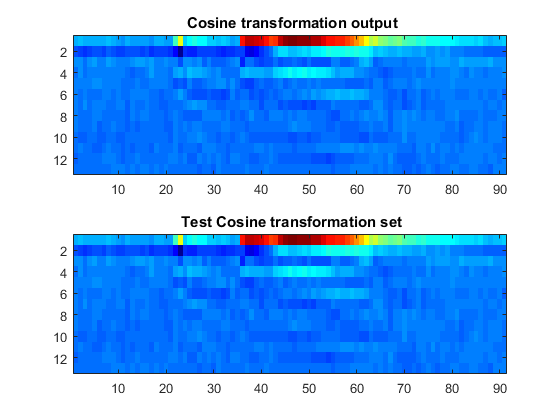
To check the performance numerically, we will substract the test data from the output and get the total differences between both of them
subs = test_CT - CT_frames; CT_error = sum(sum(subs))
CT_error =
4.555982327514307e-13
1.7 Liftering
Fhis is the last step, which output are the final MFCCs for the current utterance. A lifter is a filter that operates on a cepstrum might be called a lifter. A low-pass lifter is similar to a low-pass filter in the frequency domain. This is done to even clean the signal more leaving only the important and different information.
[Lift_frames] = lifter_matlab(CT_frames);
test_Lifter = example{1,1}.lmfcc';
We have now to check the performance of the written function. To do so, we have to compare the output of this function with the test data.
figure; subplot(2,1,1) imagesc(Lift_frames) title(' Lifter output') colormap jet subplot(2,1,2) imagesc(test_Lifter) title(' Test Lifter set') colormap jet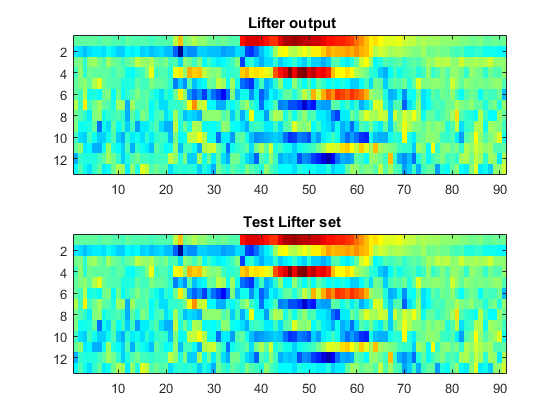
To check the performance numerically, we will substract the test data from the output and get the total differences between both of them
subs = test_Lifter - Lift_frames; Lift_error = sum(sum(subs))
Lift_error =
8.972197984569164e-13
All the steps together in order can be represented by the following figure:
figure
plot(samples)
figure
imagesc(frames);
colormap(jet)
figure
imagesc(preemph)
colormap(jet)
figure
imagesc(windowed_frames)
colormap(jet)
figure
imagesc(FFT_frame)
colormap default
figure
imagesc(melSpec_frames)
colormap(jet)
figure
imagesc(CT_frames)
colormap(jet)
figure
imagesc(Lift_frames)
colormap(jet)
 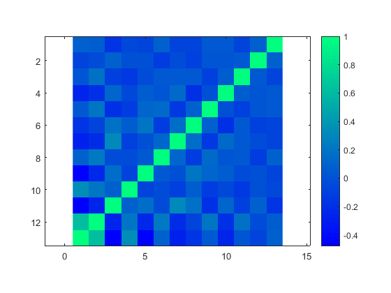 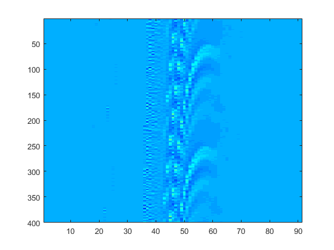 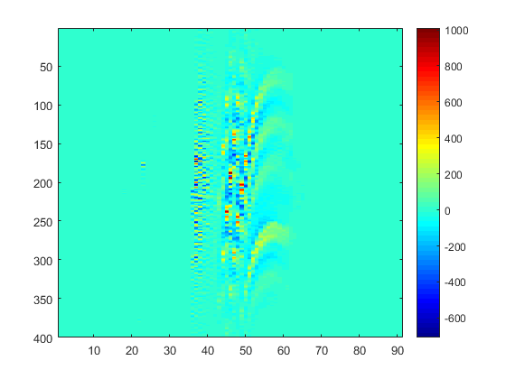 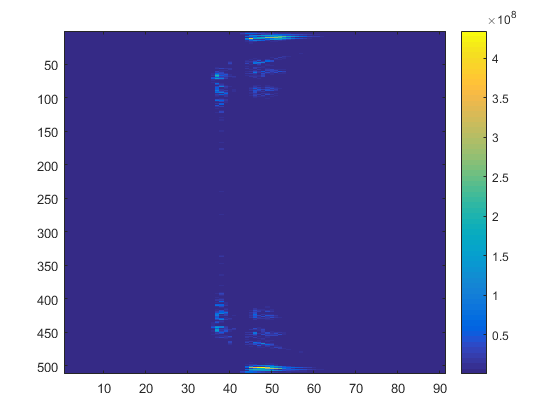
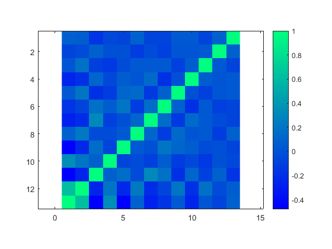 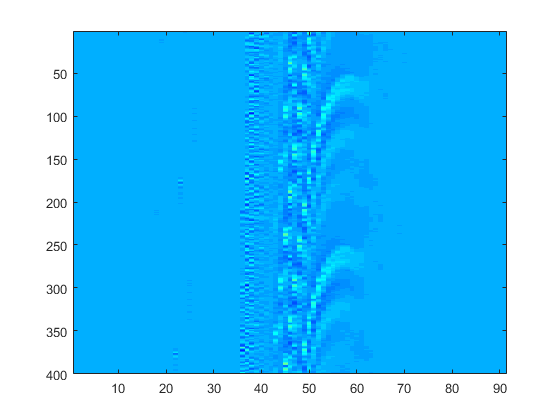 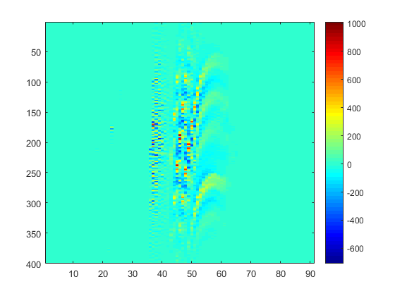 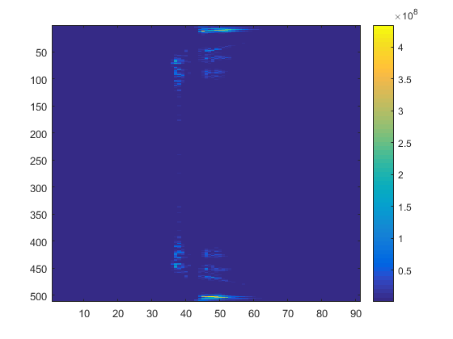  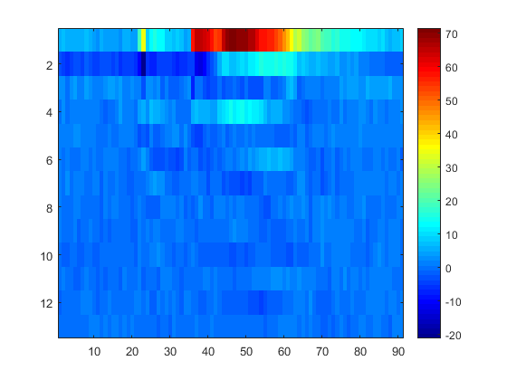 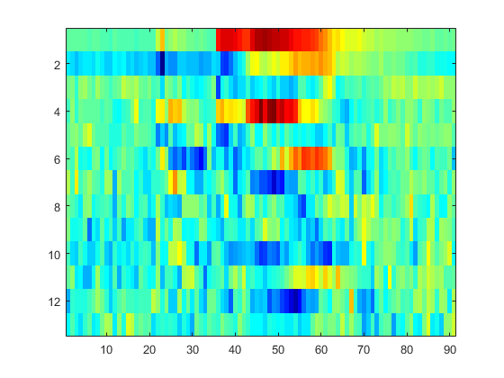
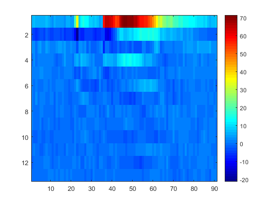 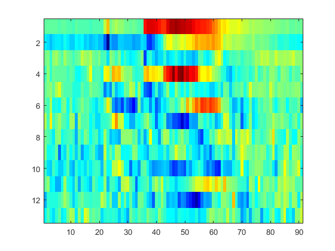 1.8 Calculation of the MFCCs for each uterance
For the further analisys of the data set, all the utterance are going to be transformed to the MFCCs space. Also, the output of each uterance will be concatenated in an unique matrix of features in order to be able to represent and gather all the features included in the data set. This matrix has dimensions of NxM being N the total number of frames in the data set and M the number of coefficients (13).
gender = []; speaker = []; digits = []; MFCCs = cell(1,44); mSpec = cell(1,44); MFCCs_straight = cell(1,44); mSpec_straight = cell(1,44); MFCCs_concatenate = []; mSpec_concatenate = []; for i = 1:size(tidigits,2) [MFCCs_straight{i} mSpec_straight{i}] = mfcc(tidigits{1,i}.samples); MFCCs{i} = MFCCs_straight{i}'; MFCCs_concatenate = vertcat(MFCCs_concatenate,MFCCs{i}); mSpec{i} = mSpec_straight{i}'; mSpec_concatenate = vertcat(mSpec_concatenate,mSpec{i}); digits =[digits; tidigits{1,i}.digit,tidigits{1,i}.gender(1)]; gender = [gender tidigits{1,i}.gender(1)]; speaker = [speaker; tidigits{1,i}.speaker]; end
2. Study the correlation between uterances
To study the correlation between the 13 coefficients, the correlation matrix of the entire feature matrix is calculated using the MFCCs coefficients.
figure corMFCCs = corrcoef(MFCCs_concatenate); imagesc(flipdim(corMFCCs ,1)); %# vertical flip) axis equal colormap winter colorbar
And the Mel filterbank features
figure corMspec = corrcoef(mSpec_concatenate); imagesc(flipdim(corMspec ,1)); %# vertical flip) axis equal colormap winter colorbar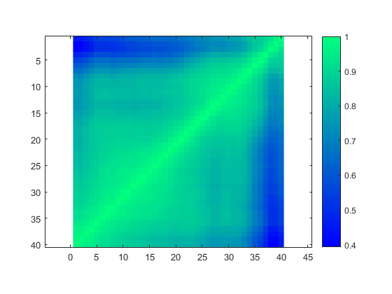
By comparing both results we can justify the steps that follow the application of the filterbank as all the correlations between coefficients have almost disappeared meaning this that all the coeffiecients are giving unique information. We can accept the diagonal covariance matrices assumption for Gaussian models as the MFCCs coefficients are almost not correlated at all.
3. Distances
The first step is that, given 2 utterances's MFCCs matrices of NxM each of the same word pronnounce by the same speaker but in differente repetitions, compute de Euclidian distance between them.
Rep_oa = mfcc(tidigits{1}.samples)';
Rep_ob = mfcc(tidigits{2}.samples)';
local_dist_o = localDistances(Rep_oa, Rep_ob);
figure
imagesc(local_dist_o)
xlabel(' Repetition B - word o' )
ylabel(' Repetition A - word o' )
colormap jet
colorbar
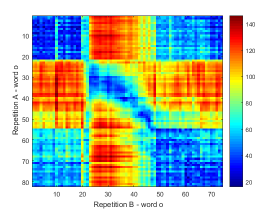 We can observe that in the first repetition the speaker said the word faster as the square that represent when the word is pronnounced and therefore where the max distances are, is moved towards the upleft corner.
The last step is to apply the Dynamic Time Warping to compute the global distances between all the utterances's MFCCs. This steo is done in order to study the relation between the digits, speakers and even genres and doing a later clustering.
D = zeros(size(tidigits,2),size(tidigits,2)); for i = 1:size(tidigits,2) for j = 1:size(tidigits,2) a = MFCCs{i}; b = MFCCs{j}; local_dist = localDistances(a, b); D(i,j) = dtw(local_dist); end end
Once this Global distances matrix is computed, is time to plot it:
figure; imagesc(D) % colormap default(1000)) colormap(jet(60)) colorbar; labels = tidigit2labels(tidigits); set(gca,'XTick',1:44); set(gca,'XTickLabel',labels); set(gca,'XTickLabelRotation',90); set(gca,'YTick',1:44); set(gca,'YTickLabel',labels); set(gca,'YTickLabelRotation',0);
labels =
[]
nex =
44
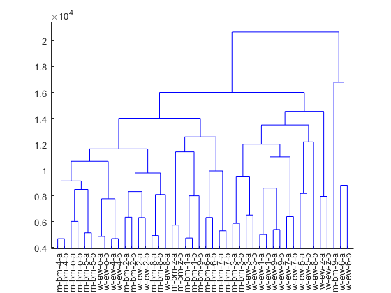 First, is really easy to see something that was evident: the diagonal is zero as it represents the distance between the same utterances. But also, we can observe that the distances between repetitions of the same speaker are really low. We can also observe that the upperleft square corresponds to the lower distances meaning that in general, between the mal speakers there are more similarities than between female spakers
Linkage clustering
Now the objective is to achieve a hierarchical clustering over the Global distance matrix. To do this we use the Linkage Matlab function over the distance matrix and compute the dendrogram with the outputed data.
Clusters = linkage(D,'complete'); [H,T,outperm] = dendrogram(Clusters, 0); labels = labels(outperm,:); set(gca,'XTick',1:44); set(gca,'XTickLabel',labels); set(gca,'XTickLabelRotation',90);
We can observe that the the classification of the digits spoken by the same speaker is generally well done, as in the first clustering level, same digits frome the same speaker are in the same cluster, with some exceptions: numbers 9 and 8. Also, in the second clusterin level we can see that some digits appear together for both speakers as for the digits 2 and 3. The last apreciation will be the fact that man and women are separated in big clusters.
Train
groups = cell(4); character = cell(4); count = 1; groups_concatenate = []; for i = 1:size(tidigits,2) if tidigits{i}.digit == '7' groups{count} = mfcc(tidigits{i}.samples)'; groups_concatenate = vertcat(groups_concatenate,groups{count}); character{count} = tidigits{i}.digit; count = count + 1; end end D = zeros(size(groups,2),size(groups,2)); for i = 1:size(groups,2) for j = 1:size(groups,2) a = groups{i}; b = groups{j}; local_dist = localDistances(a, b); D(i,j) = dtw(local_dist); end end
componentsNr = [4 8 16 32]; % data = MFCCs{1}; % data = tidigits{1}.samples'; data_t = groups_concatenate; data = MFCCs_concatenate; size(data) options = statset('Display','final'); GMModel = fitgmdist(data_t,componentsNr(1),'Options',options) % h = ezcontour(@(x,y)pdf(obj,[x y]),[-8 6],[-8 6]); P = posterior(GMModel,groups{1}); size(P) figure subplot(2,1,1) imagesc(groups{1}') subplot(2,1,2) imagesc(P')
ans =
3883 13
20 iterations, log-likelihood = -18809.6
GMModel =
Gaussian mixture distribution with 4 components in 13 dimensions
ans =
92 4
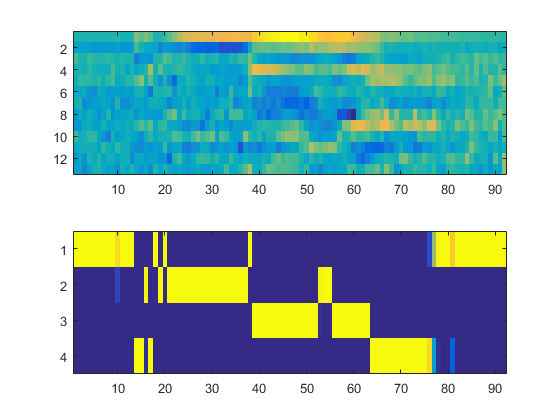 componentsNr = [4 8 16 32]; % data = MFCCs{4}; % data = tidigits{1}.samples'; % data = groups_concatenate; data = MFCCs_concatenate; data_t = groups_concatenate; size(data) options = statset('Display','final'); GMModel = fitgmdist(data,componentsNr(3),'Options',options) % h = ezcontour(@(x,y)pdf(obj,[x y]),[-8 6],[-8 6]); groups_7 = cell(4); character2 = cell(4); count = 1; groups_concatenate_7 = []; for i = 1:size(tidigits,2) if tidigits{i}.digit == '7' groups_7{count} = mfcc(tidigits{i}.samples)'; groups_concatenate_7 = vertcat(groups_concatenate,groups_7{count}); character{count} = tidigits{i}.digit; count = count + 1; end end % groups_concatenate_7 size(groups_concatenate_7) mfcc_rows = size(groups_concatenate_7, 1) /4; mfcc_cols = size(groups_concatenate_7, 2) / 1; test1 = groups_concatenate_7(1:mfcc_rows, 1:mfcc_cols); % P = posterior(GMModel,data_t); P = posterior(GMModel,test1); % P size(P) figure subplot(2,1,1) imagesc(test1') subplot(2,1,2) imagesc(P')
ans =
3883 13
56 iterations, log-likelihood = -190764
GMModel =
Gaussian mixture distribution with 16 components in 13 dimensions
ans =
484 13
ans =
121 16
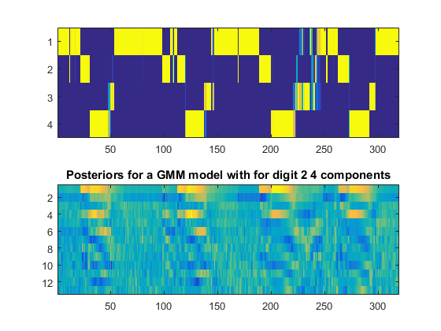